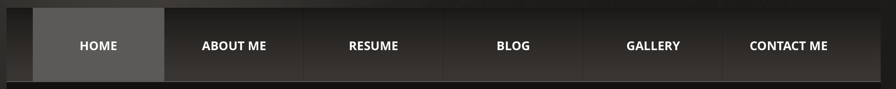
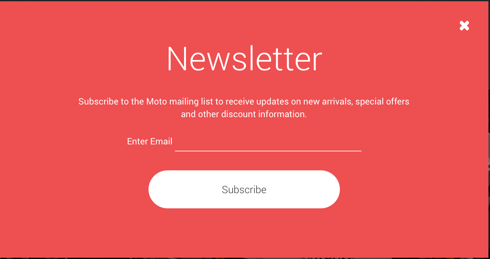

Rebecca Schwilm
Rebecca is a 22 year old aspiring web designer, with a love for photoshop. While she's still working on her color theory, she has done a handful of small freelance graphic design jobs, and is growing her ability everyday. In addition to being a student at Full Sail University, she is also a full time Internet Sales Manager at a car dealership where she managaes incoming leads and oversees communications with said leads. Recently, she has been training as an on-the-floor sales team member, and is hoping the extra hours do not affect her schoolwork, although the income is welcome.
When she's not wheeling and dealing, or typing at a computer, Rebecca enjoys playing with her one and a half year old daughter and going out for "family days" as often as possible. She and her boyfriend often enjoy a day out at the range, or a night at home alone while Grandma watches their daughter.
When Rebecca graduates, she hopes to work with a local company, Higher Images, who does internet marketing and websites for companies across the globe.
Components I Would Like to Use:
Navigation Bar

This navigation bar makes a statement, and is rather simple, yet powerful looking. It's a perfect navigation bar for a website used as a portfolio, as it gives all relevant information. With this navigation bar, it also makes it very easy to see which page of the website you are on. It would most likely be built as an unordered list set inside a div, with each item having a decent about of padding and evenly spaced using justify, perhaps. Of course, the list would have to be changed to display type inline!
Welcoming "Subscribe" box

This is a "subscribe" box that opens when you first visit the homepage. It allows the user to subscribe right away, and often get a coupon when they first visit a store's online site, or (as in this case) get a newsletter from the website! For building, it would be built similar to a modal. However, there would be no ".click" action to open it, and it would instead be opened immediately upon the open of the website.